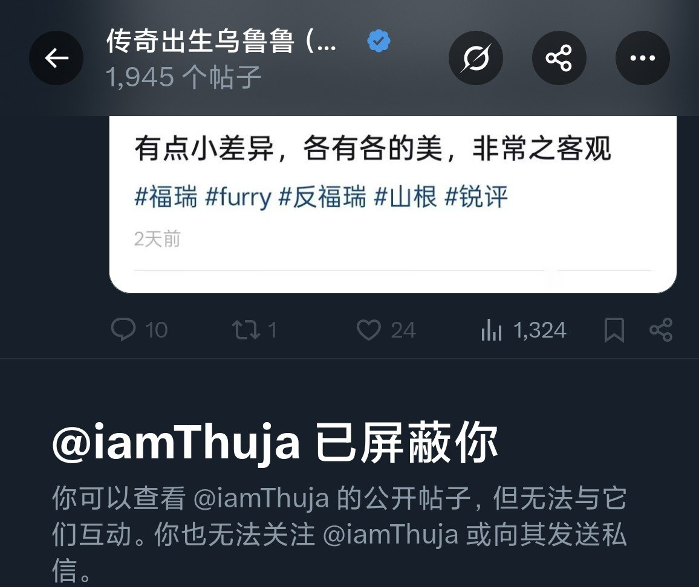

曦月🏳️⚧️🍥
@xyu1182202
@careforme123 他自己就是个只黑

maybe🍥
@careforme123
喜欢我县城人乌鲁鲁当个艺术生只能混个二本，还要标榜自己为做题蛆🤮🤮，看见不属于自己物种的人类就说是支黑，以为自己二本在县城也能月入过万，觉得找不到工作人的都是自己无能
（小孩子以为来钱很容易可以理解，毕竟每年都有压岁钱拿来充值三角洲）,一句脏话都不用就能被说破防吗？
顺便展示野爹证 https://t.co/KsLwnJCp29